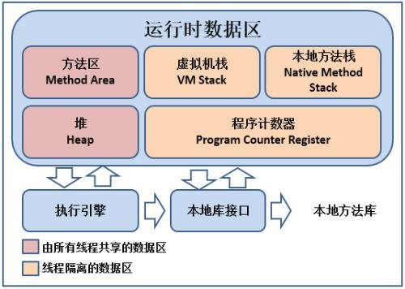
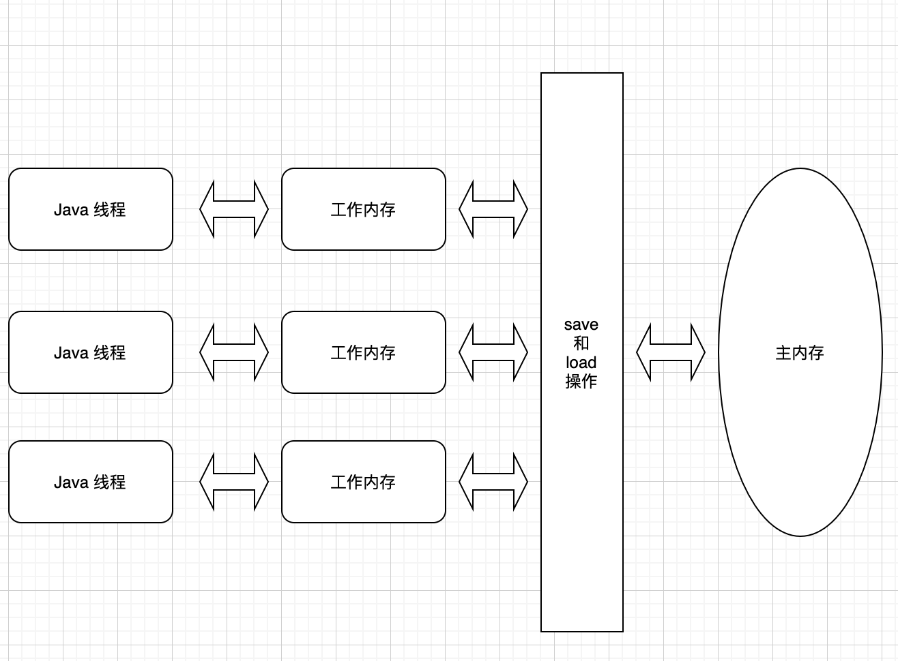

线程是操作系统进行运算调度的最小单位。包含在进程之中，属于进程中任务的实际运作单元。
一条线程指的是进程中一个单一顺序的控制流，一个进程中可以并发多个线程，每条线程并行执行不同的任务。
线程的实现可以使用内核线程（操作系统内核调度）或用户线程（用户自行调度）或内核线程混合用户线程
同一个进程中的多个线程，可以共享该进程所拥有的资源，以此可以实现线程中的相互通信
多核多处理器的普及，使得计算机进行多任务处理成为一项必备技能
计算机的运算能力远大于进行 I/O 操作，网络通信，数据库操作
将等待计算机进行 I/O 操作（存储、通信）的时间节约出来去同时处理其他任务
并行处理多个互不依赖的任务
将复杂的程序架构解耦开，使其设计简单化，不同的线程去处理不同类型的工作
那么什么是线程安全的定义呢？
可以在多个线程中使用，并且线程间不会出现错误的交互？
可以同时被多个线程调用，而调用者无需执行额外的操作？
当多个线程访问某个类时，不管运行时环境采用何种调度方式或者这些线程将如何交替执行，并且在调用方代码中不需要引入额外的同步或协同， 这个类都能够表现出正确的行为，那么就称这个类是线程安全的。
不在线程间共享该状态变量
将状态变量修改为不可变的
在访问该状态变量的时候使用同步机制


Happen-Before 原则是判断数据是否存在竞争、线程是否安全的主要依据，依靠以下规则就可以判断并发环境下两个操作之间是否可能存在冲突